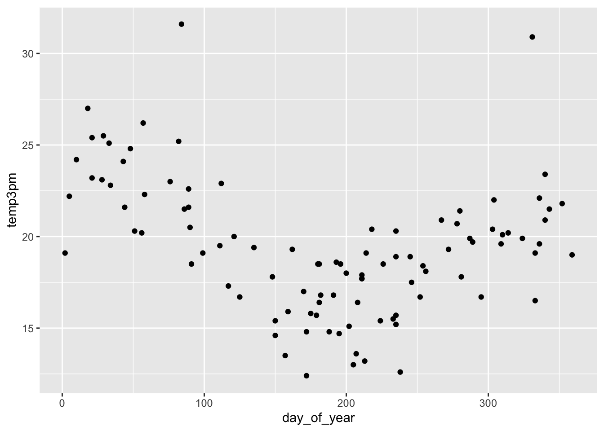
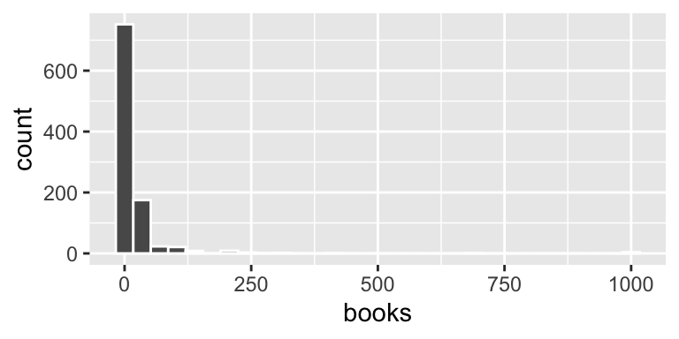

library(bayesrules) # R package for our textbook
library(tidyverse) # Collection of packages for tidying and plotting data
library(janitor) # Helper functions like tabyl
library(rstan) # for fitting models
library(rstanarm) # for fitting standard regression models
library(broom.mixed) # for tidy() function
library(bayesplot) # helpful plotting functions
library(tidybayes) # helpful for wrangling Bayesian model outputGroup Work 07
NoteNote
I’ve given you most of the R code you need for today to help you get through the questions more quickly and focus on the concepts. Make sure you understand what all the code is doing, enough so that you can replicate it on your own in the future.
In code chunks where you need to fill in the blank, remember to remove #| eval: false to get your document to render correctly
The data for today is an expansion of the weather_perth data that you worked with last week, called weather_WU. We’ll continue to model the daily 3pm temperature, starting with using the 9am temperature and later adding more predictors.
data("weather_WU")We’ll use the following Bayesian regression model:
\[Y_i | \beta_0, \beta_1, \sigma \sim N(\mu_i, \sigma^2)\]
\[\mu_i = \beta_0 + \beta_1 X_i\]
\[\beta_{0c} \sim N(30, 10^2)\]
\[\beta_{1} \sim N(0, 2.5^2)\]
\[\sigma \sim Exp(0.1)\]
Tip
Your R code from last week may be helpful here!
Simulate the posterior
- Since you worked with (essentially) this data last week, let’s begin by simulating the posterior.
# Simulate the posterior
model_1 <- stan_glm(....)- To ensure that we can “trust” the MCMC posterior simulation results, create trace plots and density plots of the multiple chains.
# your code here- How wrong is the model? To answer this question, perform a posterior predictive check using pp_check(). Does the underlying structure of our Normal regression model appear to be reasonable?
## 50 simulated posterior model lines
pp_check(model_1)Fix the model
The pp_check() revealed a structural issue with our model. (a) Identify what you think the issue is. Support your guess by constructing a relevant visualization of the raw weather data. (b) Build and simulate a new model which fixes the issue. Store this as model_2. NOTE: Do not take temp9am out of the model and use the same priors. (c) Perform a pp_check() to confirm that model_2 is structurally better than model_1.
Feel free to chat with me if you’re unsure what to do!
# your R code herePosterior predictions
We can assess the quality of predictions using both visual and numerical summaries.
- Plot the posterior predictive models for all data points. Leave code comments for any arguments you’re unsure about
# First obtain posterior predictive models
# for each data point in weather:
set.seed(84735)
predictions_2 <- posterior_predict(model_2, newdata = weather_WU)
# Plot the posterior predictive intervals
ppc_intervals_grouped(
weather$temp3pm, yrep = predictions_2,
x = weather_WU$temp9am, group = weather_WU$location,
prob = 0.5, prob_outer = 0.95,
facet_args = list(scales = "fixed")) +
labs(x = "temp9am", y = "temp3pm")- Evaluate the accuracy of the posterior predictions. Interpret each of the four reported numbers and make sure you can match them to the plot in part a.
set.seed(84735)
prediction_summary(model = model_2, data = weather)Prediction accuracy and Cross Validation
- In terms of MAE, how accurate is our model at predicting the
temp3pmvalues in our original sample? - In terms of MAE, how accurate is our model at predicting
temp3pmvalues on NEW days? - When communicating the posterior prediction accuracy for our model, which number should you report?
Model comparison
Using a sample of data on just Wollongong, let’s model temp3pm by day_of_year, 1 through 365:
# Obtain the sample data
wollongong <- weather_WU |>
filter(location == "Wollongong")
# Plot temp3pm vs day_of_year
ggplot(wollongong, aes(x = day_of_year, y = temp3pm)) +
geom_point()
Consider 3 polynomial models of this relationship:
-
mod1has no predictors: \(\mu = \beta_0\) -
mod2assumes a quadratic relationship and has 2 predictors: \(\mu = \beta_0 + \beta_1x + \beta_2 x^2\) -
mod3assumes a 12th order polynomial relationship: \(\mu = \beta_0 + \beta_1x + \beta_2 x^2 + .... \beta_{12} x^{12}\)
Simulate the posteriors for these 3 models:
mod_1 <- stan_glm(
temp3pm ~ 1, data = wollongong,
family = gaussian,
prior_intercept = normal(30, 10),
chains = 4, iter = 5000*2, seed = 84735, refresh = 0)
mod_2 <- stan_glm(
temp3pm ~ poly(day_of_year, 2), data = wollongong,
family = gaussian,
prior_intercept = normal(30, 10),
chains = 4, iter = 5000*2, seed = 84735, refresh = 0)
mod_3 <- stan_glm(
temp3pm ~ poly(day_of_year, 12), data = wollongong,
family = gaussian,
prior_intercept = normal(30, 10),
chains = 4, iter = 5000*2, seed = 84735, refresh = 0)Plot 200 posterior lines:
wollongong %>%
add_fitted_draws(mod_1, n = 200) %>%
ggplot(aes(x = day_of_year, y = temp3pm)) +
geom_line(aes(y = .value, group = .draw), alpha = 0.15) +
geom_point(data = wollongong)
wollongong %>%
add_fitted_draws(mod_2, n = 200) %>%
ggplot(aes(x = day_of_year, y = temp3pm)) +
geom_line(aes(y = .value, group = .draw), alpha = 0.15) +
geom_point(data = wollongong)
wollongong %>%
add_fitted_draws(mod_3, n = 200) %>%
ggplot(aes(x = day_of_year, y = temp3pm)) +
geom_line(aes(y = .value, group = .draw), alpha = 0.15) +
geom_point(data = wollongong)Which is the best model?
- Examine the
pp_check()for each model. Which model is the most wrong? The least? - Which model do you think will have the best “in-sample” prediction error, that is the best predictions of the data points in our
wollongongsample? Test your guess with aprediction_summary()of each model. - Which model do you think will have the best cross-validated prediction error, that is the best predictions of new data points? Test your guess with a
prediction_summary_cv()$cvof each model.
Explore the Negative Binomial model
The pulse_of_the_nation data in the {bayesrules} package contains a sample of 1,000 responses to a cards against humanity survey. One of the variables is books, which is the number of books each respondent read in the last year.
ggplot(pulse_of_the_nation, aes(x = books)) +
geom_histogram(col = "white")
- Make an argument for why a Poisson model is a reasonable model for this variable
- Calculate the sample mean and variance of the
booksvariable, and make an argument for why it does not meet the requirements for a Poisson random variable - Use the theoretical properties of the negative binomial distribution from the slides to argue that:
- if \(r\) is large, the negative binomial has similar properties to the Poisson
- if \(r\) is small, the negative binomial model is overdispersed in comparison to a Poisson model with the same mean
- Confirm your results from (c) by filling in
____in the code below to simulate two negative binomial RV’s (vandx) with the same mean as the poisson random variable (u). Use \(r=1000\) forvand \(r=1\) forx.
# Simulate the samples
set.seed(84735)
sim_data <- tibble(
u = rpois(1000, 5),
v = rnbinom(1000, mu = ___, size = ___),
x = rnbinom(1000, mu = ___, size = ___)
)
# Plot the samples
p1 <- ggplot(sim_data, aes(x = u)) +
geom_bar() +
lims(x = c(-1, 32), y = c(0, 200)) +
labs(title = "Pois(5)")
p2 <- ggplot(sim_data, aes(x = v)) +
geom_bar() +
lims(x = c(-1, 32), y = c(0, 200)) +
labs(title = "NegBinom(5, 10000)")
p3 <- ggplot(sim_data, aes(x = x)) +
geom_bar() +
lims(x = c(-1, 32), y = c(0, 200)) +
labs(title = "NegBinom(5, 1)")
p1 + p2 + p3- The stan code below fits a negative binomial regression model with no predictors. Explain why this is equivalent to finding \(\mu\) and \(r\). Then, add a comment to explain how you would add predictors to this model.
# Simulate the Negative Binomial regression model with no predictors
books_nb <- stan_glm(
books ~ 1,
data = pulse_of_the_nation,
family = neg_binomial_2,
chains = 4, iter = 5000*2, seed = 84735, refresh = 0)BR 12.10 (adapted)
The airbnb_small data in the {bayesrules} package contains information on AirBnB rentals in Chicago in 2016. This data was originally collated by Trinh and Ameri (2016) and distributed by Legler and Roback (2021). In this open-ended exercise, build, interpret, and evaluate a model of the number of reviews an AirBnB property has by its rating, district, room_type, and the number of guests it accommodates.
library(bayesrules)
data(airbnb_small)Your answer to this problem should include:
- an EDA of the response variable
- an explanation of the regression model you used and your priors
- evidence that your MCMC sample has converged
- evidence that your model adequately fits the data
- appropriate inference to answer the question of interest